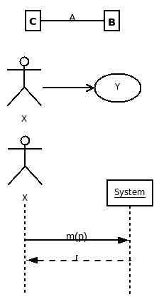

- Explain the differences in the purposes of domain models vs system sequence diagrams.
- How do SSDs fit in the Unified Process?
- I have a simple use case where a Customer uses the system to order Pizza. What objects do you
put in your SSD?
- What is the syntax for a message in a sequence diagram? Give three or four example messages.
- How do you document responses to messages? When should you do this and when
should you omit responses?
- How do you show repetition in a sequence diagram?
- What message might you write to express this step in a scenario:
User selects a thumbnail of a photograph and the system displays the photo.
- Draw an SSD for some thing you do when registering for a class in this university.
- What is an operation contract: how do you write one, and what does it mean? When do you need one?
- In which phase of the UP do you write most of the Operation contracts for a system?
- Why do we move rapidly from an incomplete set of requirements to a working but incomplete program?
- Explain the following diagrams. What do they show and what do their parts mean?

Draw an SSD for this Use Case:
Depot Stock Control System UC1
Display unfulfilled orders at my depot
- Each morning the depot manager asks the system to display
all the unfulfilled orders at his/her depot. The system responds
with a list of unfulfilled orders.
My answer:
[ 08getUnfilled.gif ]
Draw an SSD for this Use Case:
System: CSUSB Inventory
UC1 Find Equipment
- The user logs in with a name and a passwd.
- The user inputs the inventory number of a piece of equipment.
- The system returns the place the equipment is.
- Repeat the above two steps until the user logs out.
More to come in the next class.
- Artifact::="Anything that is created in the course of a project".
- artifact::=see above.
- DCD::diagram="Design Class Diagram", shows the classes that will be implemented in code.
- Deliverables::="A packet of artifacts that must be prepared by a deadline for review or distribution".
- Glossary::= See http://cse.csusb.edu/dick/cs375/uml.glossary.html.
- GoF::="Gang of Four",
[ patterns.html#GoF ]
- GRASP::patterns="General Responsibility Assignment Software Patterns",
a set of guidelines for designing objects and classes. They take a single
event that the system must handle and determine a good class to carry it out.
See
[ patterns.html#GRASP -- General Responsibility Assignment Software Patterns ]
- Grades::= See http://cse.csusb.edu/dick/cs375/grading/.
- KISS::Folk_law="Keep It Simple, Stupid", in agile processes this means never
drawing a diagram or preparing a document that doesn't provide value
to the clients and stakeholders. In all processes it means never
designing or coding what is not needed, see YAGNI.
- OO::shorthand="Object-Oriented".
- OOAD::="Object-Oriented Analysis and Design", See chapter 1 in text.
- patterns::="Documented families of problems and matching solutions", see
Patterns.
- Patterns::= See http://cse.csusb.edu/dick/cs375/patterns.html.
- Process::="How to develop software".
- RJB::=The author of this document,
RJB="Richard J Botting, Comp Sci and Engineering School, CSUSB".
- RUP::Process="Rational UP", a proprietary version of UP.
- SSD::="System Sequence Diagrams", see chapter 10 and
[ 02DiceGameSSD.gif ]
(example).
- TBA::="To Be Announced".
- UML::="Unified Modeling Language".
[ Unified_Modeling_Language ]
- UP::="Unified Process", an iterative, risk-driven, and evolutionary way to develop OO software.
- YAGNI::XP="You Ain't Gonna Need It", an XP slogan that stops you
planning and coding for things that are not yet needed. As
a rule the future is not predictable enough to program a feature
until the stakeholders actually need now. In this class it also means
"It won't be on the final or in quizzes".
- XP::="Extreme Programming", the ultimate iterative, code-centric, user-involved
process.